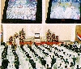
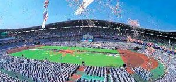
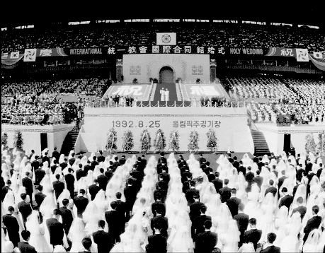

1992
1992
Motto: "Förenandet av den Nya nationen."
Världen:
7 febr 1992
Idag 1992 undertecknades Maastrichtfördraget, vilket skapade Europeiska unionen när det trädde i kraft
året efter. Bland annat inrättade fördraget Europeiska centralbanken (ECB) och processen för införande av en
gemensam valuta inleddes, Euro.
I fördraget fastställdes en uppsättning kriterier, såsom skulder och inflation, som länderna måste uppfylla för
att så småningom ansluta sig till euron. Dessa kriterier skulle senare bli berömda efter att det visade sig att
Grekland hade förfalskat data för att uppfylla kriterierna för att gå med i euron, vilket var en av de faktorer
som ledde till den grekiska skuldkrisen.
2 mars Greenhouse papers; medlemmarna David och Takeko Hose USA börjar ta emot andliga budskap efter en
olycka, där hustrun av misstag blev skadeskjuten av sonen. Meddelandena blir ansedda kontroversiella eftersom de
till viss del kritiserar UC-ledarskap.
Ex. Role of feminine
Från och med 1992 började pastor Moon att matcha medlemmar efter foto.
Foto-matchning blev vanligaste sättet att matcha för välsignelseceremonier mellan 1992 till 1999.
10 apr Womens Federation for World Peace grundas i Seoul Olympic Stadium. Den 10 april 1992, deklarerade jag inför världen att Sanna mor hade anlänt. Detta skedde vid invigningen av Womens Federation för World Peace, där vi också förkunnade kvinnors frigörelse.
1 maj-2 jun 21 stöder i Korea besöks av Hak Ja Han. 200 000 människor lyssnar.
6 - 9 juli Han proklamerar "Jag är Messias" under 4 tal i Korea.
Se
"The Reappearance of the True Parents and the Ideal Family," Seoul, July 6, 1992. - Andligt hade historien återvänt till som den var 1945.
I augusti 1992, under World Culture and Sports Festival på Little Angels' Performing Arts Center, inför de cirka 1 000 framstående ledare från hela världen, inklusive statschefer som deltog i festivalens åtta evenemang, utropade jag , "Jag är Messias, Frälsaren och den Sanne föräldern." Trots det nickade de med huvudet; ingen skakade på huvudet i protest.
25 aug 30 000 par välsignas i Korea.  



Genom Välsignelsen av 30 000 par kunde jag proklamera mig som Messias
aug World Culture and Sports Festival.
Världen:
9 okt Israeliskt 747 fraktplan kraschar efter start in i ett större bostadshus i Holland.
Den 20 november 1992, utbröt brand i den brittiska drottningens och monarkins nästan 1000 är gamla slott Windsor. Elden förstårde nio rum, skadade en och riskerade ovärderliga konstverk.
20-27 okt 8 stöders turné av Hak Ja Han.
27 okt Schweiz, Sverige, Luxemburg, Danmark, Finland bildar en grupp i WFWP.
11-18 nov 8 stöders turné i Europa.
22 nov-29 nov Moskvaturné.
2,9 dec Australien, Nya Zeeland, Filippinerna.
22 dec Peking, Kina.
fröken Hyo Nam Kim "en ödmjuk Koreansk dam (syster) ... mycket andlig som barn ... en trogen hängiven kristen och andligt öppen." blir Dae Mo Nims medium på jorden.